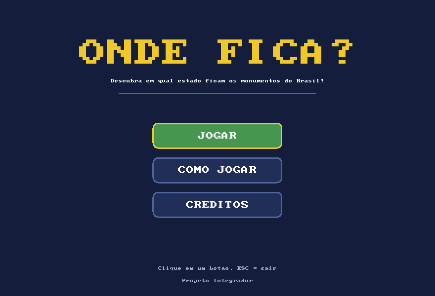
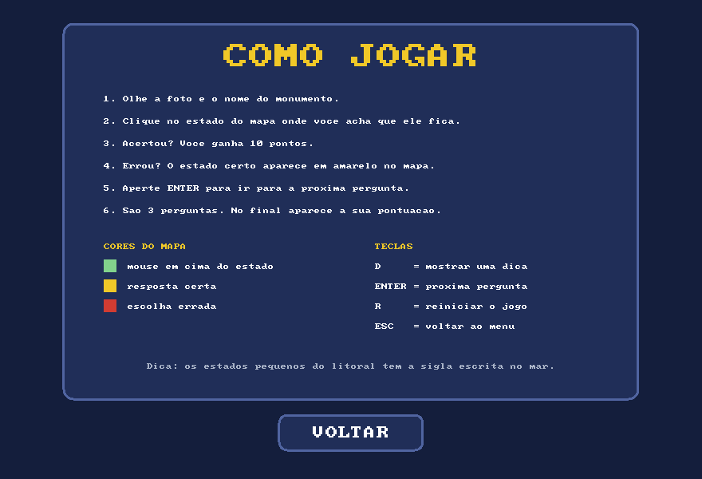
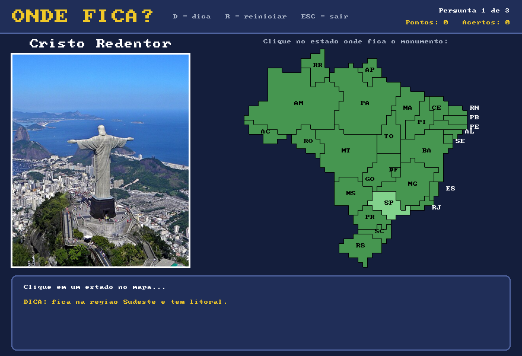
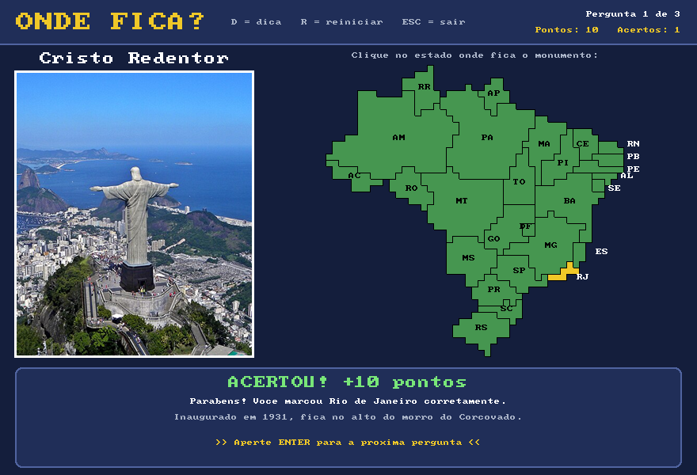
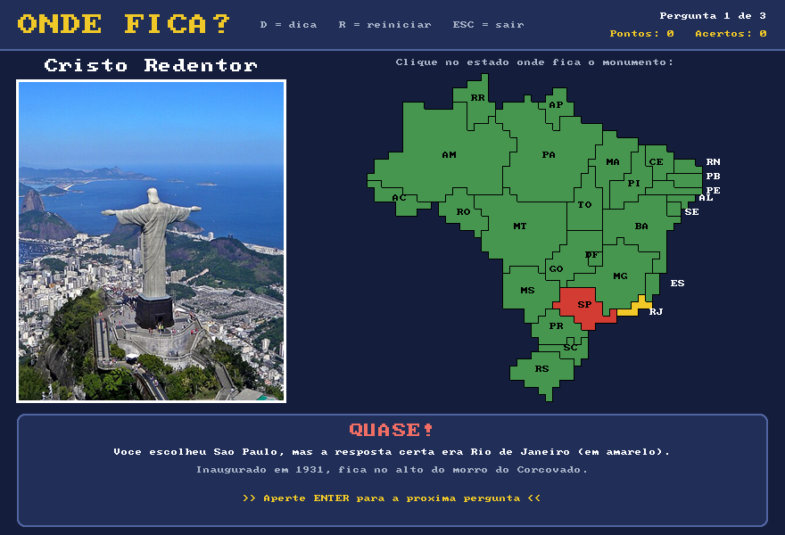
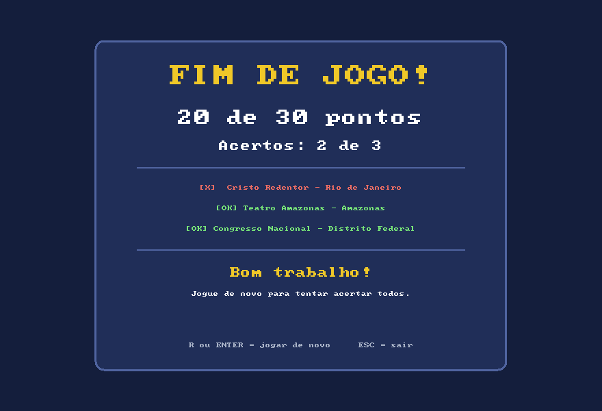

Onde Fica?
Um jogo de geografia em que você vê um monumento brasileiro e clica no estado onde ele fica.
Feito em C com a biblioteca Allegro 5 para o Projeto Integrador do curso de Ciência da Computação. São três perguntas, dez pontos por acerto, dica, tutorial e uma tela final com o resultado.
O mapa desta página é o mesmo do jogo: uma matriz de letras em que cada letra é um estado. Experimente responder.
Onde fica o Cristo Redentor?
Pergunta 1 de 3 · 0 pontos
Passe o mouse em cima de um estado.
Telas do jogo
Capturas do jogo rodando. A fonte e as cores são as do próprio Allegro: a fonte embutida tem 8 pixels e foi ampliada para os títulos.






Como foi feito
O jogo cresceu em etapas. Cada uma foi testada antes de começar a próxima.
-
Prova de conceito
A primeira versão tinha uma pergunta só, o Cristo Redentor, e um mapa feito de 27 retângulos com as siglas, organizados mais ou menos na posição de cada estado. Serviu para testar o Allegro: abrir a janela, carregar a foto e ler o clique do mouse.
-
Perguntas e pontuação
Entraram o Teatro Amazonas e o Congresso Nacional, um de cada região. Os dados de cada pergunta ficam em vetores paralelos: o monumento, a foto, a resposta, a dica e a curiosidade usam a mesma posição. Cada acerto vale dez pontos e, no fim, uma tela mostra o resultado.
-
Mapa no formato do Brasil
Os retângulos viraram uma matriz de letras desenhada a partir do contorno real dos estados. Cada letra vira um quadradinho de 8 pixels, e as fronteiras aparecem onde a letra do vizinho é diferente. O Distrito Federal e Sergipe foram um pouco aumentados para dar para clicar.
-
Tela de entrada
Por último vieram o menu com os botões Jogar, Como jogar e Créditos. Uma variável chamada
telaguarda em qual tela o jogo está, e o laço principal desenha só aquela.
Por dentro do código
Todo o jogo está em um arquivo, main.c, usando só variáveis, vetores, matrizes, condicionais, laços e algumas funções pequenas.
O mapa é texto
Cada linha da matriz é um texto e cada letra é um estado. O ponto é o mar. Este é um pedaço do Sudeste:
// U = SP V = MG Y = RJ . = mar "OOUUUUUUUVVVVYYY.......", "OXXUUUUUUVUYYY.........",
Qual estado foi clicado
A posição do mouse é dividida pelo tamanho do quadradinho. Como a divisão é entre inteiros, o resultado já é a linha e a coluna da matriz.
int coluna = (x - MAPA_X) / CELULA;
int linha = (y - MAPA_Y) / CELULA;
// a letra nessa posição diz o estado
return estado_da_letra(mapa[linha][coluna]);
Pontuação
Se o estado clicado é a resposta da pergunta atual, somam-se dez pontos. O clique só vale uma vez por pergunta.
if (escolhido == respostas[pergunta]) {
pontos = pontos + PONTOS_POR_ACERTO;
acertos++;
}
Troca de telas
Cada tela tem um número com nome. Para trocar de tela, basta mudar o valor da variável.
#define TELA_MENU 0 #define TELA_TUTORIAL 1 #define TELA_CREDITOS 2 #define TELA_JOGO 3 #define TELA_FIM 4
Como rodar
Precisa do Visual Studio 2022 com a carga de trabalho Desenvolvimento para desktop com C++.
- Baixe ou clone o repositório no GitHub.
- Abra o arquivo
JogoAllegro.sln. - Aperte F5. O Visual Studio baixa o Allegro sozinho pelo NuGet. Se não baixar, clique com o botão direito na solução e escolha Restaurar Pacotes NuGet.
- As fotos dos monumentos precisam estar na mesma pasta do
main.c.